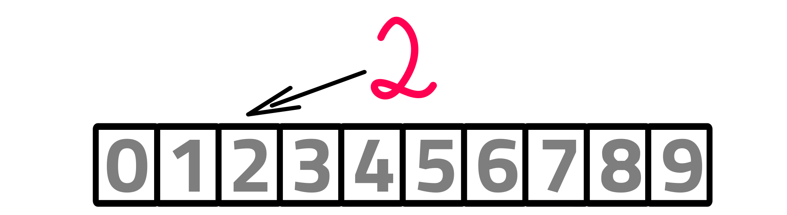

Umělá inteligence
O umělé inteligenci, jejich převratných možnostech i přidružených nebezpečích slýcháme z médií téměř každý den. Většina lidí však moc neví, co to ta umělá inteligence vlastně je. Chceme zde představit základní koncepty, jednoduché úlohy i příklady praktického použití různých podoborů umělé inteligence.
Umělá inteligence je věda o vytváření strojů nebo systémů, které budou při řešení určitého úkolu užívat takového postupu, který – kdyby ho dělal člověk – bychom považovali za projev jeho inteligence.
(Marvin Minsky, 1967)
Co všechno umělá inteligence zahrnuje?
- Řešení problémů (Problem solving)
- Teorie her (Game theory)
- Robotika (Robotics)
- Plánování a rozvrhování (Planning and scheduling)
- Strojové učení (Machine learning)
- A mnoho dalšího...
Umělá inteligence bývá velmi často spojována a bohužel i někdy zaměňována se Strojovým učením. Oblast strojového učení (anglicky: Machine learning) je jedním z podoborů umělé inteligence. V posledních pár letech zažívá strojové učení velký rozvoj a dá se čekat, že do budoucna bude zájem o tento obor ještě narůstat. Proto se mu zde budeme věnovat do větší hloubky.
Úvod do Umělé inteligence
Agenti a prostředí
Můžeme si například představit, že máme tzv. agenty – jedince, kteří se mohou pohybovat v nějakém určeném prostředí a s daným prostředím mohou interagovat. Pomocí takového jedince nebo skupiny jedinců můžeme řešit různé problémy.
Pro popis prostředí používáme tyto termíny:
- plně/částěčně pozorovatelné
- deterministické/stochastické
- diskrétní/spojité
- sigle/multi agentní
Plně pozorovatelné je takové prostředí, kde máme k dispozici úplnou informaci - žádná část není skryta. Například u šachů je prostředí plně pozorovatelné, protože máme kompletní přehled o situaci, vidíme celou hrací plochu i polohu všech figurek obou hráčů. Naopak v situaci, kdy nemáme úplnou informaci a část prostředí nevidíme, nazýváme jej částečně pozorovatelné. Příkladem částečně pozorovatelného prostředí je například bludiště, kdy agent vidí jen své přímé okolí, ale více ne.
Ve stochastickém prostředí se vyskytuje prvek náhody - například hrací kostka nebo hod mincí. Opakem je prostředí deterministické.
V multiagentních prostředích máme více než jednoho jedince. Tyto agenti spolu komunikují, spolupracují nebo soupeří. Příkladem je TCAS (Traffic collision avoidance system), systém pro redukci nebezpečí kolize letadel za letu. Jednotlivá letadla si posílají zprávy o poloze a letové výšce. Pokud by hrozila kolize, TCAS vyšle letadlům příkaz k výhybnému manévru. Pokud máme prostředí s jedním jedincem, označujeme ho za singleagentní.
Rozhodněte, jaké vlastnosti má prostředí v těchto situacích:
Ukážeme si zde několik konkrétních příkladů využití metod umělé inteligence:
Řešení problémů
V umělé inteligenci se zabýváme řešením různých problémů. Můžeme například hledat nejkratší cestu z bodu A do bodu B, vymýšlet vyhrávací strategii pro nějakou hru nebo existují obecné přístupy, které můžeme využít pro řešení různých druhů problémů.
Teorie her
Teorie her je oblast, která se zabývá analýzou.
Další materiály:
Úvod do teorie her a řešené úlohy (v češtině):
Materiály od Matematického korespondenčního semináře organizovaného studenty Matematicko-fyzikální fakulty UK: mks.mff.cuni.cz
Řešené úlohy z teorie her:
Robotika
Robotika je obor, který nejlépe poznáš, když si robota zkusíš postavit a naprogramovat. Existují stavebnice např. LEGO Mindstorms, které jsou určené právě pro výuku základů robotiky. Díky nim si můžeš postavit a naprogramovat robota během několika málo hodin. Pomocí robotů ze stavebnic LEGO Mindstorms NXT2 nebo EV3 můžeš řešit jednoduché problémy jako najít cestu z bludiště nebo sledovat barevnou čáru na zemi.
Pro složitější úkoly je dobré použít k řízení robota například Arduino nebo Raspberry Pi a k nim si pořídit vhodné motory, senzory a další součástky.
Doporučujeme vyzkoušet některou robotickou soutěž pro žáky ZŠ nebo studenty SŠ. Pokud nemáš doma nebo ve škole žádnou robotickou stavebnici, doporučujeme vyzkoušet Robosoutěž na ČVUT, kde je možné si stavebnici zapůjčit.
Soutěže:
Plánování a rozvrhování
V plánovacích problémech máme popsaný nějaký výchozí stav, ve kterém se nacházíme, a cíl, kterého chceme dosáhnout. K tomu máme seznam možných akcí, které můžeme provést.
Nejjednodušší příklad je tzv. Block world - svět kostek: Máme na stole několik kostek. Každou kostku, na které není jiná kostka, můžeme vzít a buď přesunout na stůl nebo na jinou kostku.
Na začátku máme nějaký výchozí stav: kostka A je na kostce B a ta je na kostce C. Cílem je kostky přeskládat tak, aby A byla na C a ta na B.
Povolené akce jsou zvednout kostku, položit kostku na stůl a položit kostku na jinou kostku.
V plánování je naším cílem sestavit posloupnost akcí, která povede z výchozího stavu do cílového. V tomto případě je tedy řešení například:
- Zvedni kostku A
- Polož kostku A na stůl
- Zvedni kostku B
- Polož kostku B na stůl
- Zvedni kostku C
- Polož kostku C na kostku B
- Zvedni kostku A
- Polož kostku A na kostku C

K řešení problému můžeme napsat počítačový program, který posloupnost akcí sestaví.
Možná si říkáte, proč na něco takového psát počítačový program, vždyť na tohle by asi přišlo i batole. V reálu se řeší mnohem složitější problémy - představte si místo dřevěných kostek třeba součástky pro výrobu letadel. Při konstrukci každého letadla je třeba postupně provést stovky nebo tisíce úkonů. Počítačový program dokáže vytvořit správnou sekvenci akcí, která povede k sestavení letadla velmi rychle.
Navíc můžeme zadat systému informace o zdrojích, které mám k dispozici. Takové zdroje jsou například počty personálu, který může na letadle pracovat při jedné směně, náklady na jednotlivé úkony nebo třeba časová omezení. Program pak vytvoří řešení, které bude nejen funkční, ale také ekonomicky a časově úsporné.
Této druhé části se říká rozvrhování. Je to obor, který se zabývá právě efektivním přiřazování zdrojů, když už máme vytvořený plán.
Počítačové programy dnes umějí vytvořit plány a rozvrhy za zlomek času a tím pádem i nákladů, než kdyby je vytvářel tým lidí. Navíc díky optimalizovaným rozvrhům je možné ušetřit mnoho dalších nákladů.
Například počátkem 90. let používala armáda USA program DART (Dynamic Analysis and Replanning Tool) k plánování transportu zásob a personálu po světě. Díky tomu ušetřila miliony dolarů, které byly investovány do vývoje umělé inteligence.
Strojové učení
Strojové učení je obor, kde učíme programy plnit různé úkoly jako například překládat text z angličtiny do češtiny, rozpoznávat, co je na daném obrázku, hrát různé hry a mnoho dalšího.
Zjednodušená myšlenka je taková, že programu předložíme velké množství správných dat pro daný úkol. Program si tato data projde a naučí se z nich, jak úkol plnit. Tomuto procesu se říká trénování. Například pokud chceme, aby program rozpoznával, zda je na obrázku jablko nebo hruška, dáme mu nejprve stovky nebo tisíce obrázků, na kterých bude vždy jablko nebo hruška a k tomu bude příslušný popisek, kterému se říká label. Obrázky budou různé, mohou tam být různé odrůdy jablek, některé kusy budou větší, některé menší, některé pootočené či nějak převrácené.
Těmto podkladům se říká trénovací data. Důležité je, aby těchno dat bylo hodně. Program se z nich naučí poznat rozdíl mezi jablky a hruškami. Když poté program dostane nějaký obrázek, bude schopen určit, jestli je na něm jablko nebo hruška, i když předtím tento konkrétní obrázek ještě nidky neviděl.
Rozpoznej, zda je na daném obrázku jablko nebo hruška.
Trénovací data:Obrázek:

Typ úkolu, kdy máme zařadit objekt do některé z daných kategorií, se nazývá klasifikace. V tomto případě máme jen dvě třídy, do kterých objekty klasifikujeme: jablka a hrušky.
Tříd pro klasifikaci může být více. Například můžeme rozpoznávat ručně psané číslice. V tom případě máme kategorií 10 (od 0 do 9). Automatické rozpoznávání ručně psaných číslic se využívá např. při načítání částky na šeku nebo poštovního směrovacího čisla na obálce.
Možná si teď říkáš, jak se vlastně hodnotí kvalita programu. Vždyť často nemůžeme přečíst po sobě vlastní písmo natož pak cizí. Tak jak určíme, jestli to program dělá dobře nebo špatně?
Pro takový úkol jako je rozpoznávání ručně psaných číslic je třeba mít hodně trénovacích dat. Potřebujeme mnoho vzorků psaného textu od různých lidí, abychom náš program natrénovali na spolehlivé rozpoznávání číslic. Navíc potřebujeme mít k jednotlivým vzorkům i popisky, o kterou číslici se jedná. Sesbírat tato data bývá časově i finančně náročné. Proto se při výuce i výzkumu často používají už existující sady dat. Sadě trénovacích dat s popisky se říká dataset. Například pro rozpoznávání ručně psaných číslic existuje dataset MNIST. Ten obsahuje 60 000 vzorků pro trénování programů a 10 000 vzorků nazývaných testovací data, která slouží pro následné ohodnocení úspěšnosti našeho programů.
Neuronové sítě
A jak se vlastně program může něco naučit? Tím se dostáváme ke známému pojmu: neuronové sítě. Když chceme vytvořit program, který natrénujeme na nějaký úkol, znamená to obvykle vytvoření neuronové sítě a natrénování neuronové sítě. Taková síť je složená z uzlů (na obrázku růžové), jejichž fungování je inspirováno chováním neuronů. Mezi uzly jsou spoje (na obrázku černé). Přes neuronovou síť putují informace podobně jako se šírí vzruchy v mozku nebo centrální nervové soustavě.
Nejprve si představme, že máme neuronovou síť už natrénovanou a chceme pomocí ní určit, zda je na daném obrázku jablko nebo hruška. Taková síť má vstupní uzly, přes které se obrázek načte. Data putují přes neuronovou síť až k výstupním uzlům, které zodpoví, do které kategorie obrázek patří. Mezi vstupní a výstupní vrstvou mohou být tzv. skryté vrstvy (hidden layers).
Jak taková síť funguje zkusíme ukázat právě na jablkách a hruškách. Máme jeden vstupní uzel, ve kterém je zakódovaná informace o obrázku, který máme klasifikovat. Velmi zjednodušeně si to můžeme představit tak, že ve vstupním uzlu máme seznam čísel, kde první kóduje barvu objektu na obrázku, druhé značí velikost, třetí tvar, čtvrté přítomnost stopky atd.
Tento seznam pošleme přes spoje dalším neuronům. Každý spoj může původní seznam nějak modifikovat - například čísla něčím vynásobit a tak podobně. V neuronech ve skryté vrstvě nejprve sečteme všechny hodnoty, které přišly do daného uzlu přes spoje ze vstupní vrstvy a výsledek potom pošleme dále, do výstupní vrstvy. Ve skryté vrstvě můžeme omezit, jaké informace dál pošleme. Například můžeme dál poslat jen čísla, která budou větší než je nějaká hranice (threshold).
Nakonec v neuronech ve výstupní vrstvě opět sečteme čísla, co přišla po jednotlivých hranách a podle jejich výsledku uvidíme, jak obrázek klasifikovat. V tomto případě nám může například jeden výstupní uzel ukazovat, jak moc to vypadá, že je na obrázku jablko a ten druhý zase značí, jak moc je objekt podobný hrušce. Vybráním maxima pak určíme, o které ovoce se jedná.
Při trénování neuronové sítě postupně vypočítáváme hodnoty, které se v neuronové síti vyskytují, jako například thresholdy. Na začátku můžeme hodnoty zvolit náhodně a pak je postupně upravujeme podle obrázků v trénovacích datech tak, aby jim síť co nejlépe odpovídala a tedy co nejlépe pak určovala neznámá data.
Typy úkolů
Kromě už výše popsané klasifikace můžeme řešit pomocí strojového učení a neuronových síti i další typy úkolů:
- Klasifikace - daný vstup máme zařadit do některé z určených tříd 
- Regrese - pro daný vstup máme vypsat adekvátní výstup, obvykle reálné číslo
- Shlukování - data na vstupu máme seskupit do několika skupin podle toho, jak jsou si data podobná nebo naopak odlišná
Užití strojového učení
Rozpoznávání obrazu (image recognition): krom už výše zmíněného rozpoznávání psaných číslic se strojové učení používá například pro rozpoznávání poznávacích značek vozidel v parkovacích domech nebo při měření rychlosti. Další možnosti užití jsou například při autonomním řízení vozidel, kde se image recognition a object detection (detekce jednotlivých objektů) může použít při analýze situace v okolí vozidla.
Rozpoznávání a generování řeči (Speech recognition and generation): podobně jako u obrázků i u zvuku lze použít strojové učení k rozpoznávání, co se vyskytuje v daném vzorku dat případně i generování nových vzorků.
Strojový překlad (Machine translation): neuronové sítě a strojové učení se dnes běžně využívají pro automatické překládání textů. Úroveň vygenerovaného překladu je velmi dobrá.
Hraní her: strojové učení se využívá při tvorbě programů pro hraní her. Známým příkladem je AlphaGo – program pro hraní deskové hry Go. V roce 2016 porazil AlphaGo jednoho z nejlepší světových hráčů v poměru 4:1.
Příklad: Object detection
Opakování základních pojmů
Vyber správné významy pojmů ze strojového učení:
Testovací dataKlasifikace
Overfitting
Hluboké učení